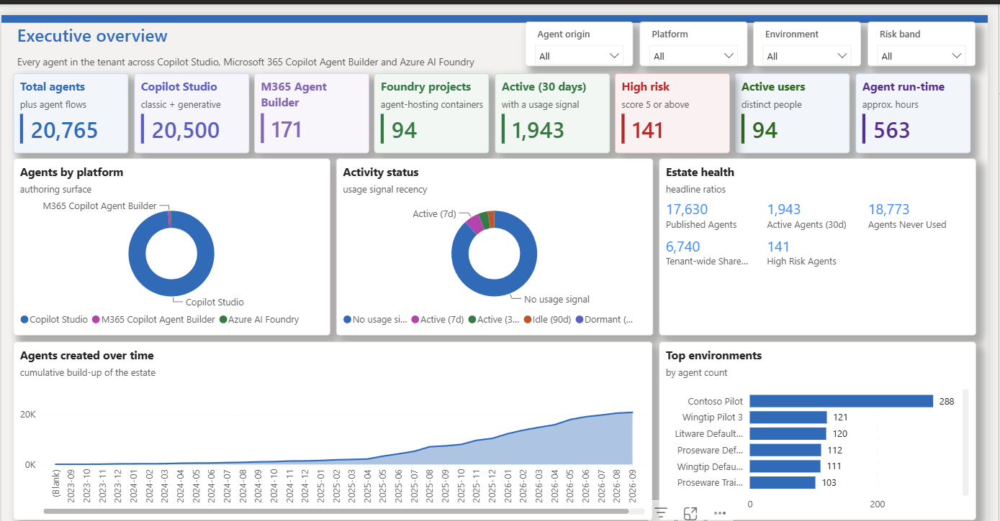
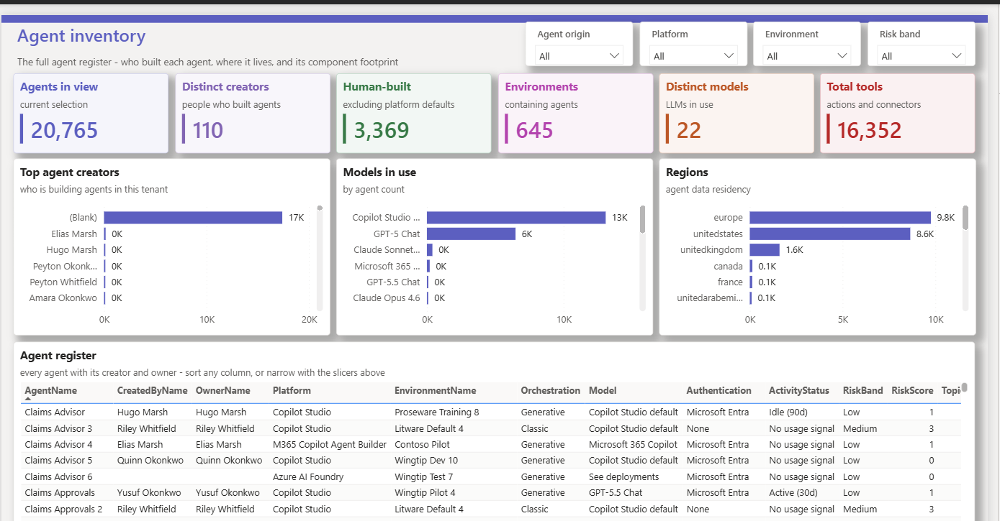
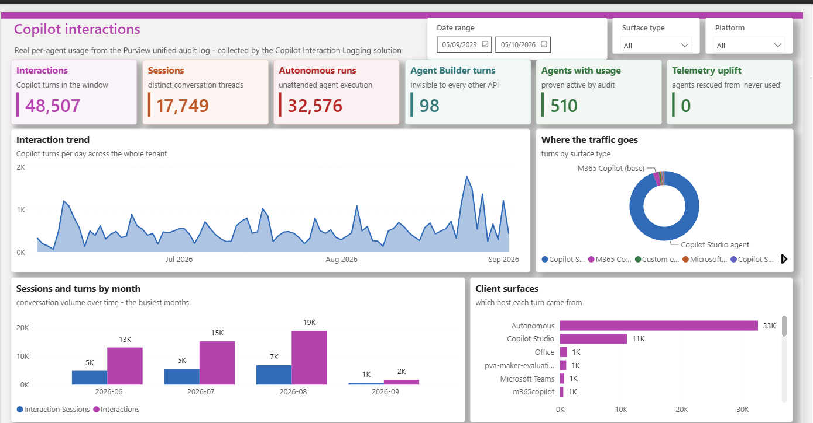
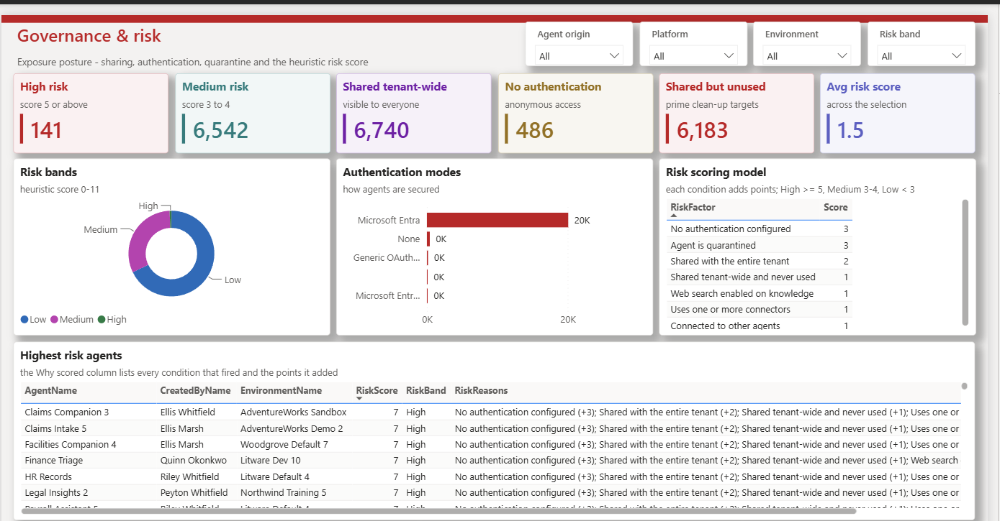
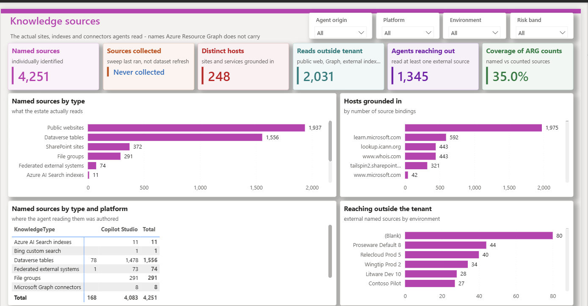
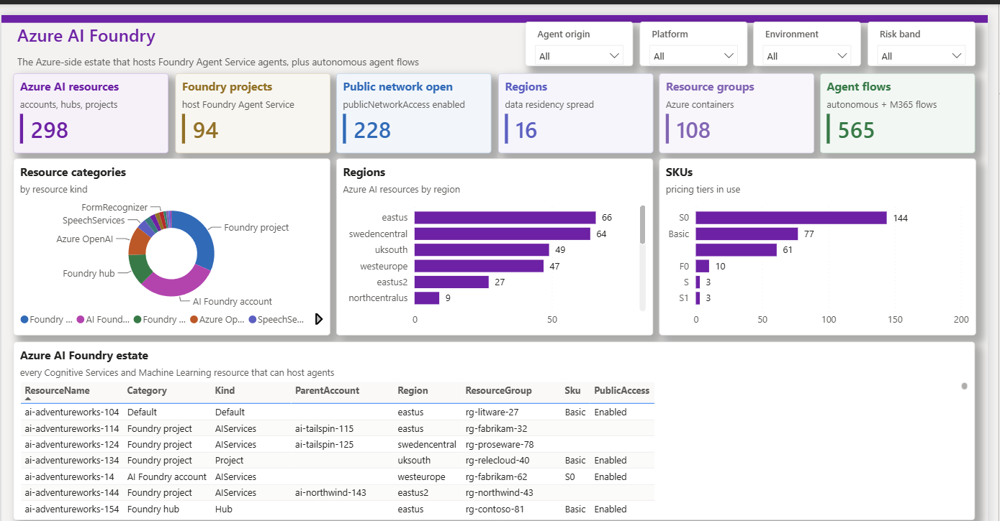

Community project · Not a Microsoft product · Documentation only
Custom Agent Reporting – Architecture
A reference design for tenant-wide reporting on agents across Copilot Studio, Microsoft 365 Copilot Agent Builder, SharePoint agents and Microsoft Foundry. It is built from read-only Microsoft APIs, a few Power Automate collectors and a Power BI report.
This page documents a working build to show what a custom solution can do: the architecture, the data lanes, the lessons learned and screenshots of the result. The Power BI report file (PBIX) and the code that generates it aren't published. One part of the semantic model, Copilot interaction usage, is captured by a companion collector, Copilot Interaction Logging, which is documented separately as a build guide.
It isn't a product, and it is not a replacement for Microsoft Agent 365.
- 6 data lanes3 direct, 3 through daily collectors
- 3 connectorsResource Graph, Dataverse, Web
- No gatewayScheduled refresh in the service
- 21 tablesA star schema around the agent
- 166 measuresIn 12 display folders
- 16 report pages287 visuals
- Read-onlyNever changes an agent
- Docs onlyNo PBIX, solution or code
Read this first
Not a replacement for Microsoft Agent 365
This is a custom build, not a Microsoft product
Microsoft Agent 365 is Microsoft's control plane for agents: it helps organisations observe, govern and secure them. The design on this page only reports. It shows what a custom solution can do, and it doesn't do what Agent 365 does. If your organisation has Agent 365, use it.
- You build, run and maintain it. Nothing here is a service. You own the collectors, the credentials, the refresh schedule and every fix when an API changes. Agent 365 is delivered and maintained by Microsoft.
- Reporting only. It reads metadata and draws a report. It can't create, change, block, quarantine or delete an agent.
- No agent identity management. It reads identity linkage properties, but it doesn't issue, govern or review agent identities.
- No content inspection or data loss prevention. It never reads prompts or responses, and it can't apply protection policies.
- No per-agent cost metering.
- Coverage gaps. Some agents and properties aren't reachable through the public APIs it uses; see Platform coverage.
- No support. It is community documentation, shared as is. Microsoft doesn't support it.
How the scope compares
| Area | Microsoft Agent 365 | This design |
|---|---|---|
| Delivery | Microsoft service | Your own build – you run and maintain it |
| Observe | Registry, agent map, adoption, activity and health | A scheduled Power BI report |
| Govern | Lifecycle, access and compliance through the Microsoft 365 admin center, Microsoft Entra and Microsoft Purview | None – read-only |
| Secure | Entra risk-based access, Purview information protection and data loss prevention, and Microsoft Defender | A heuristic risk score, with no enforcement |
| Identity | Microsoft Entra Agent ID | Reads linkage properties only |
| Support | Microsoft | Community documentation, no support |
Agent 365 capabilities are summarised from public Microsoft documentation at the time of writing and may change. Check the service description for the current scope.
The gaps listed on this page describe this design and the public APIs it uses, not Agent 365. Some registry attributes, such as an agent's description, its publisher, the named users it's shared with and its sensitivity label, weren't reachable in this build. If you have Agent 365, its registry and APIs are the better inventory source.
Proof it works
Screenshots from a working build
Six of the 16 report pages from a working build. Names are fictitious and figures are indicative only. Select an image to enlarge it.


(enlarge)

(enlarge)

(enlarge)

(enlarge)

(enlarge)

(enlarge)The other ten pages: All agents, Agent analytics, Creators & ownership, Usage & popularity, Adoption & activity, Tools & integration, Knowledge & grounding, Data sources & gaps, Shadow AI (endpoints) and SharePoint agents.
How it fits together
Architecture at a glance
Read-only Microsoft APIs feed one Power BI semantic model. Three lanes go straight into the model at refresh. The other three need a small daily collector, because Power BI can't call those APIs itself.
- Read-only. It never changes an agent. The only writes are the collectors' rows in your own Dataverse, plus lane D's application user in each environment if you use its provisioning flow.
- Three connectors. Azure Resource Graph, Dataverse (as an OData feed) and the Web connector for Defender advanced hunting. The model never calls Purview or Power Automate.
- No gateway. Every source refreshes in the Power BI service; see Refresh without a gateway.
- Dataverse is a convenience. Azure SQL Database or a Fabric lakehouse would work as the collector store too. Only the collectors' write step and the model's data-access function would change.
- Data first, generated from code. The pages were designed around what the APIs actually return, and the semantic model and report are generated from code, so a rebuild is repeatable.
Data
Six collection lanes
Lanes A, B and F need nothing installed: the semantic model queries them at refresh. Lanes C, D and E need a small collector, because Power BI can't call those APIs directly (see Collectors).
| Lane | Collects | How | Model connects to |
|---|---|---|---|
| A – agent inventory | Copilot Studio and Agent Builder agents, Foundry projects, agent flows and environments | Power BI queries Azure Resource Graph at refresh | Azure Resource Graph connector |
| B – owner and creator identity | Display names for creators and owners | Dataverse at refresh | systemuser in the reporting environment |
| C – interaction telemetry | Per-turn usage from the Purview audit log, including SharePoint agents | A daily flow writes to Dataverse, built with Copilot Interaction Logging (see lane C) | Dataverse |
| D – named knowledge sources | The sites, indexes and connectors each agent reads | A daily sweep of botcomponents (component type 16) in every environment | Dataverse |
| E – SharePoint agent inventory | .agent files: current or deleted, names, sites and URLs | A daily flow over file-operation audit records | Dataverse |
| F – Shadow AI on endpoints | Unsanctioned AI desktop tools on managed devices | Defender advanced hunting at refresh | Web connector to api.security.microsoft.com |
Lane B – resolving names
- Names come from the reporting environment's
systemusertable. Any Dataverse role that can read it is enough, such as Basic User. - It only covers principals that exist in that environment. Microsoft Graph
directoryObjects/getByIdswould cover the whole directory, but it isn't gateway-free from Power BI. - Relabel the null GUID
00000000-0000-0000-0000-000000000000as "System / platform" before the lookup, or it shows as a blank creator. - Agent Builder creators resolve fully. Foundry projects carry no creator at all.
- The names are denormalised onto the Agent table (
CreatedByName,OwnerName,OwnerUpn), so visuals don't need a second hop.
Companion solution
Interaction logging (lane C)
Lane C has its own build guide
The interaction collector is documented separately as Copilot Interaction Logging, a documentation-only build guide with no package to install. It explains every action in both flows and why it exists, the secret-handling decision (Azure Key Vault, a plain-text environment variable or a certificate) and the environment variables, so you can build, secure and maintain the collector in your own environment.
What lane C adds to the model:
- Surface classification. Each audit record is classified by its
AppIdentity: Copilot Studio agent, Microsoft 365 Copilot (base chat), custom engine agent, Microsoft first-party agent, Copilot Studio (other), Fabric or Power BI copilot, personal agent, Agent Builder agent, Teams Toolkit agent, declarative agent, or Agent Builder authoring. - Autonomous runs. A large share of agent activity can be autonomous, triggered by events rather than people, so "active users" alone understates usage.
- Per-turn timestamps. The audit log is the only source of per-turn timestamps. Sessions are a distinct count, so monthly session figures don't add up to the total.
- Agent Builder. Records join to inventory through
Copilot.Studio.Declarative.T_<titleId>. The title ID only exists once an agent is published, so drafts never join. - SharePoint agents. The identity
SPO_…_<drive item id>decodes to the file'sListItemUniqueId, which joins to lane E.
Operational notes
- Audit records can lag by up to about 24 hours, so each collection window ends well short of now.
- A skipped day doesn't heal itself. Re-run the collector for the missing window.
- If you store the client secret in a plain-text environment variable, remove its current value before you export the solution, because exports include it.
Out-of-band
Collector patterns
Three lanes need a collector: a scheduled Power Automate flow that calls an API Power BI can't call, and writes the result to Dataverse tables that the model then reads.
| Aspect | Lane C – interactions | Lane D – knowledge sources | Lane E – SharePoint agents |
|---|---|---|---|
| Adds | Who used which agent, when and how often | Which site, website or index each agent reads | Which .agent files exist, and their state |
| Why Power BI can't read it | A POST-only, asynchronous audit API, with a token audience the Web connector can't request | One Dataverse per environment, so the endpoint would be a computed (dynamic) data source | The same asynchronous POST API, and the records need grouping |
| Permissions | AuditLogsQuery.Read.All (application), with admin consent | No API permissions; an application user in each environment | The same permission, so it can reuse lane C's app; no Sites.Read.All |
| Pages empty without it | Copilot interactions and usage uplift | Knowledge sources | SharePoint agents inventory |
That's two app registrations in total: an audit app shared by lanes C and E, and a knowledge-sweep app for lane D. Defender uses the report owner's own credentials in Power BI, so it needs no app.
Lane C – interaction collector
- Credential Get the app registration's credential: a client secret held in Azure Key Vault or a plain-text environment variable, or a certificate. Which one is your decision.
- Window Choose a window that ends well short of now, to allow for audit ingestion lag.
- Query POST the audit query, then poll until it completes.
- Page and upsert Page through the results and upsert each record on its audit record ID, so a re-run never duplicates rows.
- Log Write a run-log row with counts and errors.
Every HTTP call has a retry policy. Copilot Interaction Logging documents every action in the tested flow and why it exists, so you can build it yourself.
Lane D – knowledge-source sweep
- Get the credential and open a run-log row.
- Read the manifest of environments the app can reach.
- Build a key-to-row-ID index of existing rows. The Dataverse connector only updates by primary-key GUID and refuses alternate keys.
- Sweep environments 20 at a time, with one GET per environment on
botcomponents, expandingparentbotid. - Extract each source's name, kind and locator from the component YAML with a single Select action.
- Write rows 8 at a time.
- Tombstone missing sources only after a clean run. The guard re-reads error and fresh-row counts from Dataverse, because counters updated inside concurrent loops aren't reliable.
- Close the run log.
Lane D – provisioning the application user
The sweep needs an application user in every environment it reads. An optional provisioning flow keeps that list current:
- Scope. Target either the environments that contain agents (from Azure Resource Graph) or every environment with Dataverse. The Resource Graph route needs Reader at the tenant root management group, because
PowerPlatformResourcesrows are tenant-scoped, with an emptysubscriptionId. - Grants. List the environments, subtract those already in the manifest and call
addAppUserfor the rest. Prove each grant by signing in as the service principal and callingWhoAmI, because a 200 fromaddAppUseris optimistic. Record each proven grant, so the manifest doubles as the revocation list. - Run controls. What-if mode by default, a per-run cap applied before the loop, and idempotent, self-healing runs.
- HTTP and authentication. Each HTTP call turns off the asynchronous pattern and uses a 3-minute timeout. The flow uses a client secret, because the HTTP with Microsoft Entra ID connector isn't preauthorised for this API (
AADSTS65002). Register the service principal as a Power Platform admin management application. Don't rely on global discovery, which under-reports environments for app-only identities. After changing an environment variable, turn the flow off and on again.
System Administrator in every environment
addAppUser grants the System Administrator role, with no lower option. Treat the app's secret accordingly. Deleting the app registration revokes its access everywhere at once.
Lane E – SharePoint agent inventory
- Query
sharePointFileOperationaudit records with the keyword.agent(default look-back 180 days). - Poll until the query completes, then page through the results.
- Group by lower-case
ListItemUniqueId. If a file's latest operation is a delete or recycle, mark it deleted. - Upsert by row ID.
- Delete stale rows only after a successful, non-empty query with zero errors.
- Log the run.
The result is an inventory of what was observed within audit retention, not a census: an .agent file with no operation inside the window isn't seen.
Power BI
Gateway-free scheduled refresh
The model refreshes on a schedule in the Power BI service with no on-premises data gateway. Three rules make that work:
- Use certified connectors or static base URLs The service must be able to see every data source before refresh, so each one needs a fixed address.
- Navigate, don't concatenate A URL built at refresh time is a dynamic data source, which the service won't refresh.
OData.Feedhas noRelativePathoption, so open the service document and navigate to the table instead. - Organisational credentials and the Organizational privacy level Sign in to all three sources with an organisational account and set each one's privacy level to Organizational. Private trips the formula firewall when sources are combined.
| Source | Connector | Why this one |
|---|---|---|
| Azure Resource Graph | AzureResourceGraph.Query | The Web connector can't send an authenticated POST or request the Azure Resource Manager audience, https://management.core.windows.net |
| Dataverse | OData.Feed | The same audience problem rules out the Web connector |
| Defender advanced hunting | Web.Contents | A plain GET against a fixed host |
Defender, with a static host and the query passed as options:
Web.Contents(
"https://api.security.microsoft.com",
[RelativePath = "api/advancedqueries", Query = [key = query]])For a regional host (uk., eu., us. or au.), edit the literal rather than parameterising it.
Dataverse, navigating from the service document:
let
Source = OData.Feed("https://<org>.crm.dynamics.com/api/data/v9.2/"),
Rows = Source{[Name = "<entityset>"]}[Data]
in
RowsSkip test connection for Defender
When you enter the Defender credentials in the service, tick Skip test connection. The API root returns 404, so the test fails even though refresh works.
Then set the schedule in the semantic model's settings; see Configure scheduled refresh.
Model
Semantic model
A star schema with the agent at the centre: 21 tables, and 166 measures in 12 display folders, all held in a measure-only Metrics table.
Main tables
| Group | Tables |
|---|---|
| Inventory | Agent (one row per agent per environment, across all platforms), Environment, AgentFlow, AzureAIResource, SharePointAgent |
| Configuration | AgentConnector (with an IsMcpServer flag), AgentKnowledge, KnowledgeSource |
| People | User |
| Usage | Interaction (one row per turn), CopilotSurface, TelemetryCoverage. Loaded from the Dataverse tables that Copilot Interaction Logging writes (lane C). |
| Risk | RiskFactor, RiskDetail |
| Coverage | ApiCoverage |
| Shadow AI | A watchlist-driven tool catalogue, signals and devices |
| Support | Date, Metrics, Pages |
Where the Usage tables come from
Copilot interaction usage is the one part of the model captured by Copilot Interaction Logging, a companion build guide. Two Power Automate flows read the Purview audit log through Microsoft Graph and write metadata to three Dataverse tables, and the model reads those tables at refresh to build Interaction, CopilotSurface and TelemetryCoverage.
It's one example of a capture method, not a requirement. The same audit records could reach the model from the Microsoft Sentinel CopilotActivity table, the Office 365 Management Activity API or a store you already run. Only the model's data-access step would change.
Relationships
- Agent and AgentFlow relate to Environment.
- AgentConnector, AgentKnowledge and KnowledgeSource relate to Agent.
- Agent relates to User twice, for the creator and the owner.
Interaction[SurfaceKey]relates to CopilotSurface, andInteraction[AgentKey]to Agent.CopilotSurface[SharePointAgentKey]relates to SharePointAgent.Interaction[Date]to Date is active.Agent[CreatedDate]andAgent[LastUsedDate]to Date are inactive and used through USERELATIONSHIP, because two active paths to Date are ambiguous and Power BI Desktop refuses to load the model.
Fallback labels
Every lookup has a visible fallback: Unlisted: <id>, "Unknown", "Not specified" (kept distinct from "Copilot Studio default") and "Agent no longer in inventory". A blank sorts first in most visuals and looks like a fault.
Classification
Origin and risk scoring
Origin
Origin is the first slicer on every page, because platform scaffolding otherwise drowns out the agents people actually built.
| Origin | Rule | Examples |
|---|---|---|
| Platform-provisioned | Created by the null GUID | Scaffolding, template copies and system bots |
| Human-built | The creator resolves to a real principal | Agents that people built |
| Creator unknown | No creator is recorded | All Foundry projects |
"Creator unknown" is kept separate on purpose: folding it into either of the other two would overstate one of them.
Risk score
Each agent gets points for the conditions below. The total sets its band, and a RiskReasons column explains the score, for example "No authentication (+3); Shared with entire tenant (+2)".
| Condition | Points |
|---|---|
| No authentication | +3 |
| Quarantined | +3 |
| Shared with the entire tenant | +2 |
| Shared tenant-wide and never used | +1 |
| Web search turned on | +1 |
| Uses connectors | +1 |
| Connected to other agents | +1 |
Bands: High 5 or more · Medium 3–4 · Low under 3.
A heuristic, not an assessment
The score ranks agents for review; it doesn't prove that an agent is safe or unsafe. Tune the weights and conditions to your own policies before you rely on it.
Completeness
Platform coverage
| Platform | Inventory | Configuration | Usage |
|---|---|---|---|
| Copilot Studio | Full | Full | Full Inventory usage fields plus the audit log |
| Microsoft 365 Agent Builder | Full createdIn = "Copilot Studio Lite" | Full | Audit only |
| SharePoint agents | Observed Within audit retention (lane E) | Partial File, site and URL | Audit |
| Microsoft Foundry (formerly Azure AI Foundry) | Projects only Depends on Azure RBAC | Partial | None |
| Agent flows | Full | Full | Partial |
Completeness checks
- A single Azure Resource Graph type holds all the Copilot Studio and Agent Builder agents.
createdInhas exactly two values, and their counts add up to the total.- Power Platform rows aren't filtered by Azure RBAC. What you see depends on the signed-in user's admin role instead, so a user without one gets a partial list with no error.
Activity
LastActivityAt is the later of the inventory's last-used date and the latest audit record for the agent. An agent only counts as unused when both are silent.
What it can't see
- Agents surfaced as Microsoft 365 apps: the app catalogue (
/appCatalogs/teamsApps) wasn't reachable in this build. - Agents deleted since they were used. Their audit records show as "Agent no longer in inventory".
.agentfiles with no file operation inside audit retention.- Agents inside Foundry projects, which need data-plane roles on each project.
In this build, most audit interactions resolved to an inventoried agent. Most of the rest were base Microsoft 365 Copilot chat and Microsoft first-party agents, which have no inventory row to join to.
Gotchas
Lessons from the build
Lessons from building against the real APIs. Each one cost time to find, and most aren't obvious from the documentation.
Azure Resource Graph pages silently
Results come back 1,000 rows per page. Order by id so paging is stable, follow $skipToken until it's gone, and reconcile the row total against a single summarize count() query. See Paging results.
Detecting MCP servers needs a regex
To flag connectors that are MCP servers, match the serialised tool list with matches regex '"type":"MCP"'. A plain contains test was unreliable in this build.
entraAgentId is not entraAppId
The two properties identify different directory objects. Never join on one as if it were the other.
knowledgeByType gives counts, not names
The inventory record counts each kind of knowledge (graphConnectors, dataverseSources, publicSites, files, fileGroups, sharepointSites, powerPlatformConnectors, bingCustomSearch and teamsMessages) but doesn't name the sources. Lane D supplies the names.
The inventory record is rich
Each agent's Resource Graph record carries about 31 properties, covering authentication, sharing, quarantine, connectors, knowledge counts, connected agents, instructions and usage. Most of the governance pages are built from this one record.
Agent Builder agents live in the same table
They're distinguished by createdIn = "Copilot Studio Lite". Their titleId, which joins audit records to inventory, only exists once an agent is published.
SharePoint agents are .agent files
They have no Resource Graph record. Lane E builds their inventory from file-operation audit records, and lane C's SPO_…_<drive item id> identity decodes to the same ListItemUniqueId, which links usage to the file.
Foundry shows projects, not agents
Resource Graph lists Foundry projects. The agents inside them sit behind each project's data plane, which needs per-project roles, so the report counts projects only.
Avoid CALCULATE in calculated columns
CALCULATE triggers context transition, which makes the column depend on every other column in the table. The result can be a circular dependency or a column that's silently blank. Use MAXX(FILTER(…)) instead. A build-time check enforces this rule.
Run-time is a floor
Agent run-time is measured as elapsed time per conversation thread per day. Treat it as a lower bound, not a precise figure.
Guard deletes with fresh counts
Before a collector deletes or tombstones rows, it re-reads error and row counts from Dataverse rather than trusting variables updated inside concurrent loops. A failed or partial run then can't empty a table.
Instruction text isn't collected
An agent's instruction text only exists in the YAML of botcomponent type 15, which this build doesn't collect. Whether an agent has instructions comes from Resource Graph instead.
Endpoints
Shadow AI on managed endpoints
Lane F uses Microsoft Defender advanced hunting to look for unsanctioned AI tools on managed devices, through three layers of evidence.
| Layer | Table | Proves | Limits |
|---|---|---|---|
| Installed | DeviceTvmSoftwareInventory | A packaged app is present | Misses portable, per-user and installer-free tools |
| Executed (30 days) | DeviceProcessEvents | The tool ran, and who ran it, including command-line tools such as Claude Code and GitHub Copilot CLI | Misses tools that weren't launched in the window |
| Network (30 days) | DeviceNetworkEvents | The device reached an AI service | The broadest layer, and the only one that sees browser use, but contact isn't proof of use |
- One watchlist drives both the queries and the tool catalogue, so an empty page means "none found", not "not checked".
- Whether a tool is sanctioned is your own policy, held in the watchlist.
- The vendor match is left blank for Microsoft, Google, GitHub and Hugging Face, whose names are too broad, so those tools match on product name alone.
- The longest term wins, so "GitHub Copilot CLI" matches before "Copilot".
Watch for false positives
Developer packages such as node-cli-cursor and restore-cursor matched the term "cursor". The fix was a server-side name-prefix match combined with a vendor match.
A floor, not a census
Results only cover devices onboarded to Defender for Endpoint; unmanaged and personal devices are invisible. Defender for Cloud Apps Cloud Discovery is complementary and isn't wired into this build.
Access
Permissions
Everything is read-only apart from the collectors' own tables. Each lane needs only the access listed here.
| Area | Identity | Permission |
|---|---|---|
| Inventory (lane A) | Signed-in user | Power Platform Administrator, Global Reader or AI Administrator. Without one of these roles, Resource Graph silently returns partial results. |
| Foundry projects | Signed-in user | Reader on each subscription, or at the Tenant Root Group. Granting it at the root may first need a Global Administrator to elevate access. |
| Names (lane B) | Signed-in user | A Dataverse security role that can read systemuser in the reporting environment |
| Interactions (lane C) | App registration | AuditLogsQuery.Read.All (application) with admin consent; AuditLog.Read.All isn't enough. Unified audit logging must be on, and history starts from when it was turned on. Without consent, the API returns 401. |
| SharePoint agents (lane E) | App registration | The same permission, so reuse lane C's app |
| Knowledge sources (lane D) | App registration | No API permissions. An application user in each environment, with System Administrator (see Collectors). |
| Power BI | Report owner | Power BI Pro, Premium Per User or a Fabric capacity, plus organisational credentials for the three data sources |
| Shadow AI (lane F) | Signed-in user | Security Reader or an advanced hunting role, on a tenant with Defender for Endpoint |
What it can't do
It can't create, edit, turn off, delete or run agents, and it doesn't read prompts or responses. The only writes are the collectors' rows in your own Dataverse. The exception is lane D's optional provisioning flow, which adds an application user with System Administrator to each environment.
Suggested order
Each step lights up more of the report, so you can start small:
- Power Platform Administrator Inventory, configuration and risk pages.
- Subscription Reader Foundry projects.
systemuserread Creator and owner names.- Audit app Interactions, usage and SharePoint agents.
- Knowledge-sweep app Named knowledge sources.
- Security Reader (optional) Shadow AI.
Before you build
Limitations and upkeep
Plan for upkeep
This is a custom build, so it needs an owner in your organisation: someone to watch the flows, rotate credentials, repair breakages when APIs change and answer questions about the numbers. Microsoft doesn't support it.
- Preview and beta APIs.
PowerPlatformResourcesin Azure Resource Graph is new and lightly documented, and this build called the audit log query API on the Microsoft Graph beta endpoint. Either can change without notice. - Schema drift. New properties, renamed values and new Copilot surfaces all need model changes.
- Audit retention and lag. Usage history is limited by your audit retention, and records can arrive up to about a day late.
- Credential rotation. Client secrets expire. A lapsed secret stops the collectors quietly unless you alert on the run log.
- Coverage gaps. Some agents can't be seen at all; see Coverage.
- Heuristic risk. The score ranks agents for review and is no more than that; see Origin and risk.
- Shadow AI is a floor. Only managed, onboarded devices are covered; see Shadow AI.
- No support. It isn't a Microsoft product, so there's no support channel, service level or roadmap.
- Agent Builder drafts don't join. Usage can't be linked to an agent until it's published.
- Agents inside Foundry projects aren't counted. Only the projects are.
- Counts drift. Inventory, audit and Defender data refresh at different times, so totals on different pages can differ slightly. The screenshots show one tenant at one point in time and are indicative only.